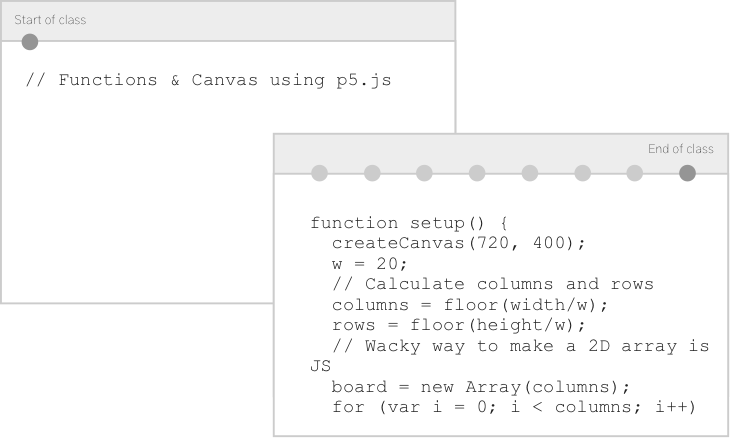

How it works
A lot of engineering lessons are instructor led code alongs, however some students struggle to keep up with the pace of the class. Codecast aims to alleviate these in-classroom painpoints while also serving as a learning artifact for the lesson.
1 The instructor runs CodeCast locally and points it at the lesson directory.
2 A unique Lesson URL is generated and available for classroom.
3 Each save creates a step. As instructor presents the lesson, students are able to reference changes at the URL and copy code into their projects.

4 The final product serves as helpful reference for the lesson and learning progression while adding little overhead for instructors.